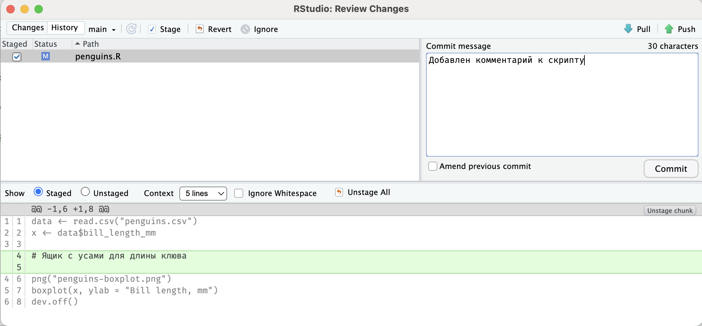
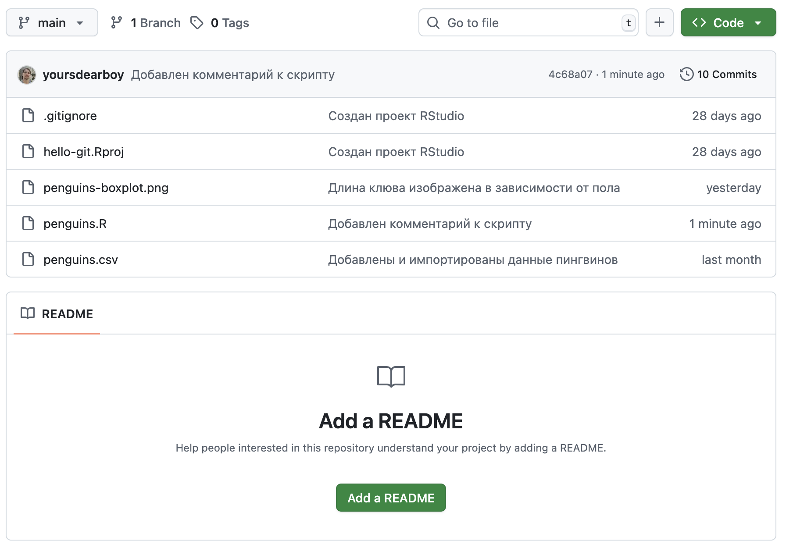
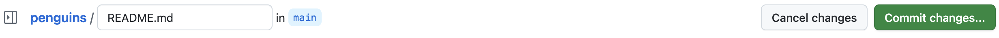

Глава 16 Загрузка изменений
На предыдущем шаге мы загрузили изменения из нашего локального репозитория в удаленный репозиторий на GitHub при помощи команды push в терминале.
Git не синхронизирует изменения автоматически, это необходимо делать вручную, используя команду push ил кнопку Push в интерфейсе RStudio на панели Git.
Создадим и загрузим еще один коммит. Например, добавим небольшой комментарий к коду, чтобы человеку открывшему его впервые было легче разобраться.
data <- read.csv("penguins.csv")
x <- data$bill_length_mm
# Ящик с усами для длины клюва
png("penguins-boxplot.png")
boxplot(x, ylab = "Bill length, mm")
dev.off()Сохраните и закомитьте файл penguins.R.
После чего нажмите кнопку Push в верхнем правом углу.

Перейдите на страницу репозитория на GitHub и убедитесь, что коммит был загружен.
Это можно понять по тексту сообщения над списком файлов и по тексту и времени изменения напротив файла penguins.R.

GitHub позволяет вносить изменения в репозиторий из веб-интерфейса. Эта функция используется редко, потому что код необходимо запускать и проверять на компьютере, но она полезна для небольших правок или загрузки файлов. Создадим при помощи нее новый файл. Файл README — это файл, который отображается на главной странице репозитория для краткого описания проекта. Обычно он включает описание данных и скриптов, как начать работу с проектом и тому подобное.
Нажмите кнопку Add a README. В открывшемся файле введите текст в формате Markdown4 (используйте или измените текст ниже) и нажмите кнопку Commit changes в верхнем правом углу. Откроется окно создания коммита, оставьте текст по умолчанию и подтвердите создание коммита нажатием кнопки Commit changes

# Пингвины «Палмер» 🐧
Этот репозиторий был создан в рамках курса от [Института биоинформатики](bioinf.me/education/stat),
чтобы познакомиться с основами Git — фиксацией изменений, ветвлением и работой с GitHub.
В качестве примера использованы данные о длине клюва пингвинов,
собранные доктором Кристен Горман на станции «Палмер» в Антарктиде.
Содержимое репозитория:
- penguins-boxplot.png — диаграмма ящик с усами, показывающая распределение длины клюва
- penguins.R — скрипт для построения диаграммы
- penguins.csv — данныеЧтобы загрузить изменения из удаленного репозитория на компьютер используется команда pull.
Вернитесь в RStudio и на панели Git нажмите кнопку Pull.
Если команда выполнилась успешно, в списке файлов появится файл README.md,
а в журнале — коммит созданный через GitHub.
Как и в случае с переключением веток, Git откажется загружать изменения и выдаст ошибку, если в рабочей папке имеются незафиксированные изменения, которые конфликтуют с загружаемыми.
Теперь вы умеете загружать изменения в удалённый репозиторий и из него. Рекомендуем делать это регулярно, чтобы синхронизироваться с другими участниками проекта, по крайней мере, в конце рабочего дня или рабочей сессии.